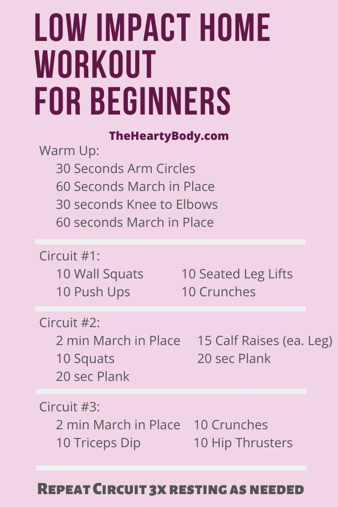

Tips For WorkOut
Getting started on a new workout regime is a daunting prospect. We know it’ll hurt, and have to drag ourselves there on occasion and the prospect of spending our time sweating among all those toned and muscled Adonises is quite an intimidating one. These top tips we’ll find our workout goes without a hitch.
SET REALISTIC GOALS
It’s vital to break our ultimate goal down in to stages and set lots of smaller goals to keep you motivated along the way.
TIME OF DAY
Exercise at the time when you feel that you have most energy.
BE CONSISTENT
Results come through regular and consistent activity. Stick to our programme and avoid frequent stops and starts.
WARM UP
Before any session ensure that you warm up thoroughly and mobilise the areas that you will be using during the workout. Furthermore, failure to warm up properly may increase the risk of injury
TRAIN WITH A FRIEND
It keeps our motivated during the sessions themselves but will also make you less likely to miss a planned session as we’re unlikely to want to let down our friend.
TRY SOMETHING NEW
Keep things interesting by trying new exercises, workouts and activities to keep your programme fresh, keep challenging our body and preventing boredom.
ACCEPT FEELINGS OF DISCOMFORT
First start exercising you’ll experience feelings of discomfort such as shortness of breath, sweating and aching muscles after exercising.This is completely normal and everyone feels like this when they’re first starting out
For More Info Click
|
Regularly exercise even a little if there is free time so that the body is healthier


|
More Workout Yahoo!!


|